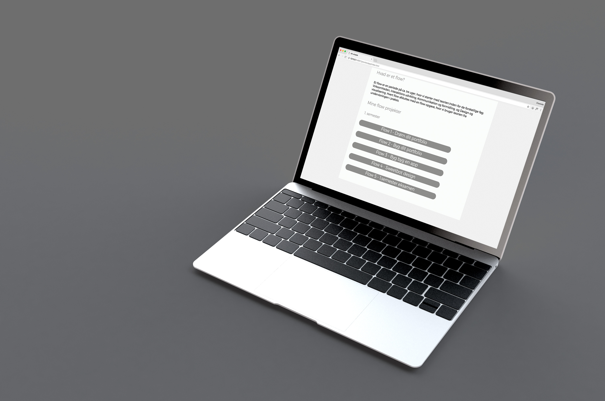
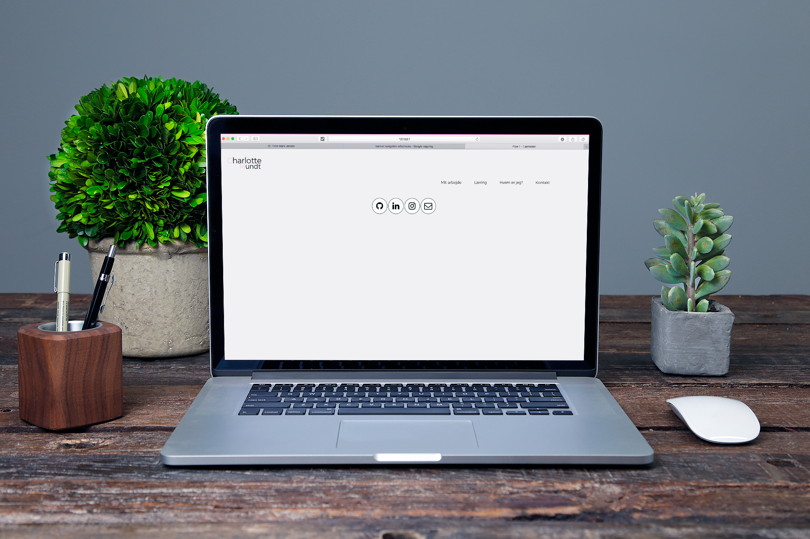
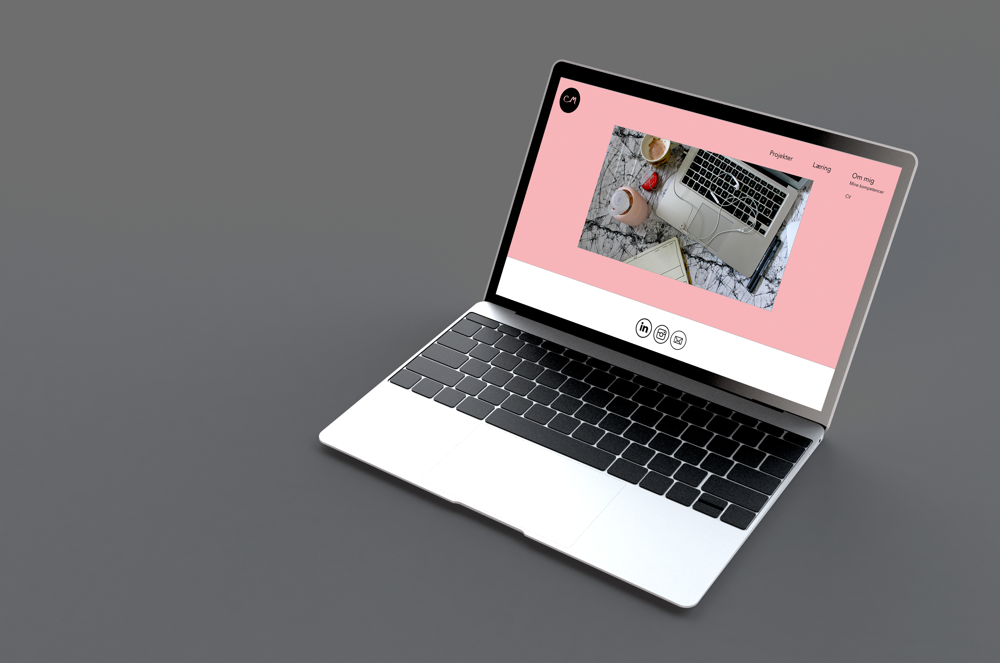
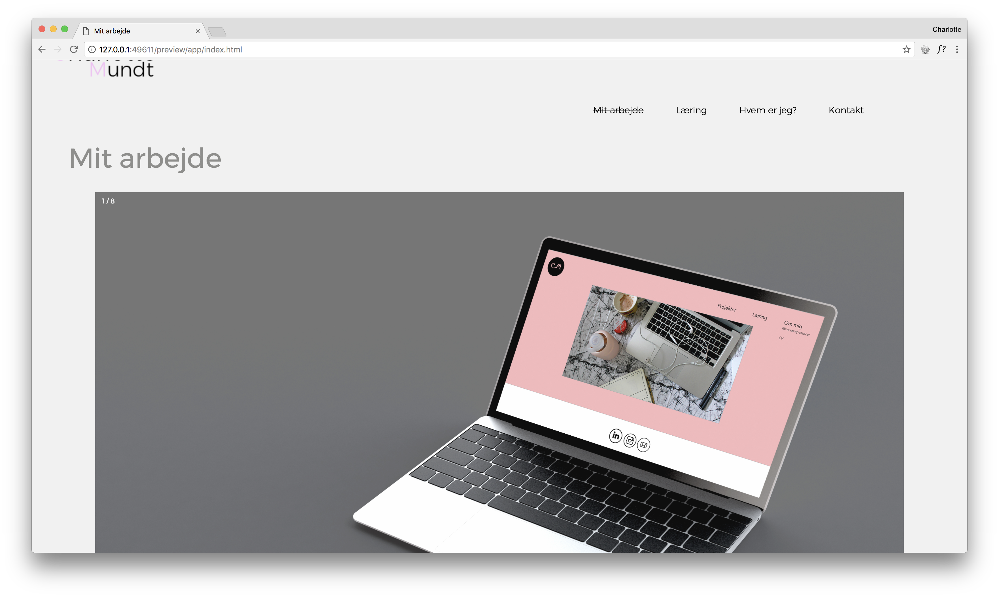
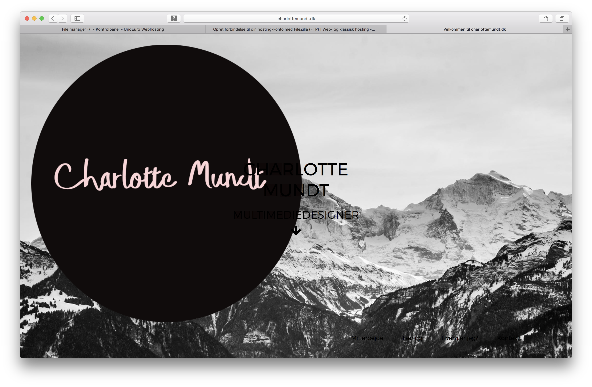

Flow 5 - Eksamens prokejt
Udviklings process
Mit eksamens portfolio
Jeg har bygget det protofolio jeg forhold til min kunnen, hvad ville kunne programmere, det er ikke det portfolio jeg skal blive ved med at have jeg er allerede igang med bygge et nyt.
Mine tanker undervejs i udviklings procsen
Jeg har i eksamens perioden haft svært ved at finde det helt rette design, fordi jeg var i gang med at lave et ny portfolio allerede inden hvor jeg brugte noget bootstrap, som vi ikke måtte til det projekt, derfor har jeg skulle tænke det lidt anerledes, og nogle de ting jeg gerne ville kunne jeg altså ikke helt selv lave, der for har jeg udviklet mit portfolio udfra mine nuværende kundskaber, jeg forsætter med at bygge videre på mit eget portfolio projekt efter eksamen opgaven er afsluttet.
Jeg har haft svært ved at finde ud hvordan jeg skal brande mig selv, det handler om jeg skal sælge mig selv i fremtiden når jeg skal finde den praktik plads og senere et arbejde, jeg skal finde ud hvad det præcist er jeg gerne vil i fremtiden, selvom jeg på første semester er blevet klogere på hvad jeg vil er der stadig meget jeg skal have fundet ud i forhold til at brande mig selv, jeg skal skille mig ud men jeg må heller ikke larme for meget. Den balance skal jeg arbejde noget mere på.
Jeg har kigget mange portfolioer igennem og virksomheder hjemmeside fra den kreative branche som jeg gerne vil være en del af, for at få inspiration, jeg har fokuseret på at skabe noget meget enkelt. Jeg har arbejdet med at gøre min hjemmeside responsiv der stadig noget jeg skal øve mig på i forhold til det, jeg har gjort brug af forskellige kode sprog, html, CSS. Jeg har arbejdet med jquery og javascript. Jeg havde store problemer med især jquery, vi har arbejdet med det i undervisning, men det brugte jeg meget tid på at få til at virke ordenligt. Jeg har tidligere arbejdet med lidt javascript og det her været letter for mig at få intregreret dette i mit portfolio.
Det har været enorm spændende proces at kigge tilbage på det projekter jeg tidligere har lavet på uddannelsen, det er sjovt at se hvordan man har udviklet sig, der mange tinge jeg allerede nu ville gøre anderledes med de remakes som jeg har lavet i denne gang.
Min planlægning proces jeg haft den en smule svært ved, jeg synes det var svært at forudsige hvorlang tid det tog at lave hver opgave. Jeg skulle jeg gjort noget anderledes ville jeg gerne have brug meget mere tid på design fasen, jeg har skulle gå på nogle kompromisser med mig selv undervejs fordi jeg ikke havde kundskaberne endnu. Jeg ville gerne have arbejdet mere med forskellig skitser og ideer, jeg havde oppe i hovedet men som jeg aldrig fik testet af.
Jeg er stadig meget glad for at kode og arbejde med kodning, jeg her blevet ret god til at søge løsninger på nettet når det noget jeg ikke kan få til at fungere, til næste gang vil jeg sætte mig mere ind i flex boks, jeg vil gerne arbejde med CSS grids. Men jeg er selvfølgelig stødt på nogle problemer undervejs i processen.
Det har været en spændende proces at udvikle et ny portfolio, jeg er typen som vidst aldrig bliver helt tilfreds. Der er altid noget som kunne gøres bedre eller på en anden måde, der kunne stykke mit portfolio, så jeg kunne stå stærkere når jeg skal finde min praktik plads. Men det er en proces som jeg skal arbejde videre på, for at udvikle mig som designer, formidler og koder.
Hvor jeg før har været meget sikker på jeg skulle lave one page portfolio er jeg blevet sikker på at det skal jeg ikke have.Jeg lavede en one page som mit remake af drøm din portfolio opgaven, jeg er siden blevet meget klogere på hvordan mit portfolio skal se ud i fremtiden - og one page drømmen er der ikke længere.